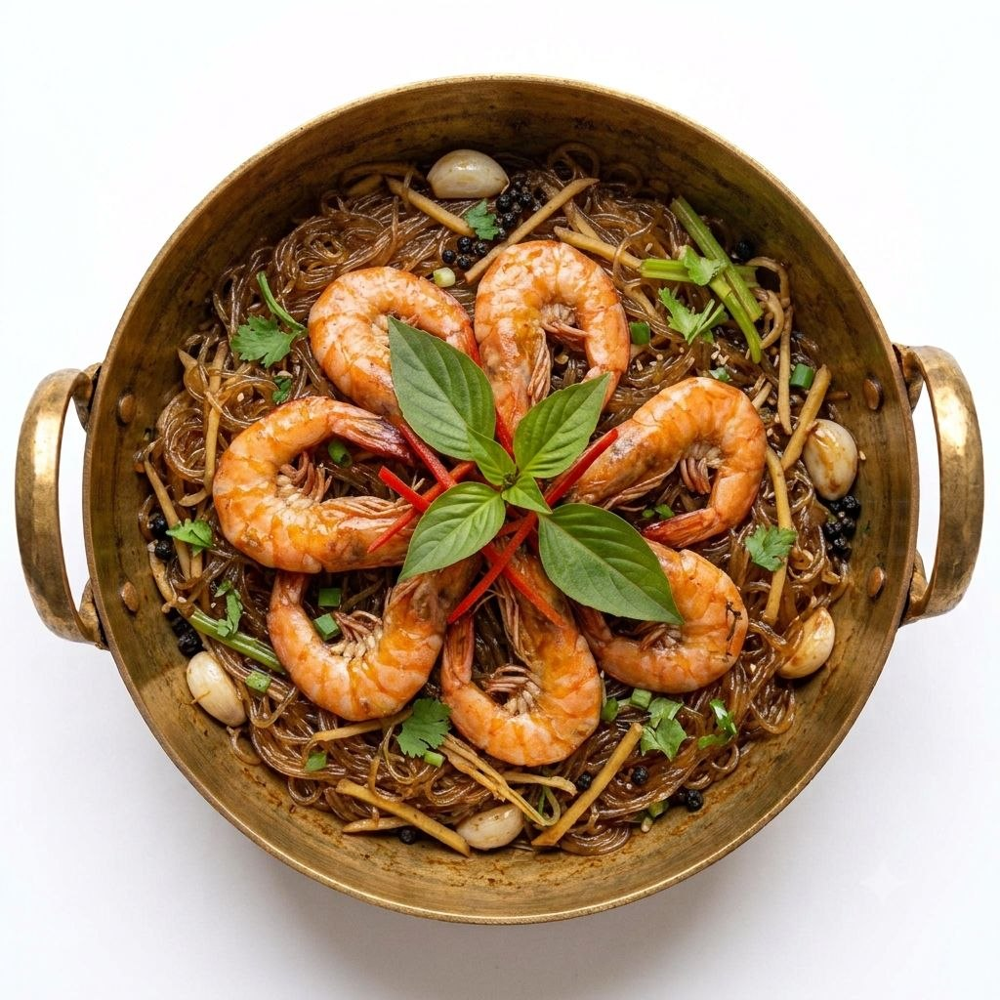
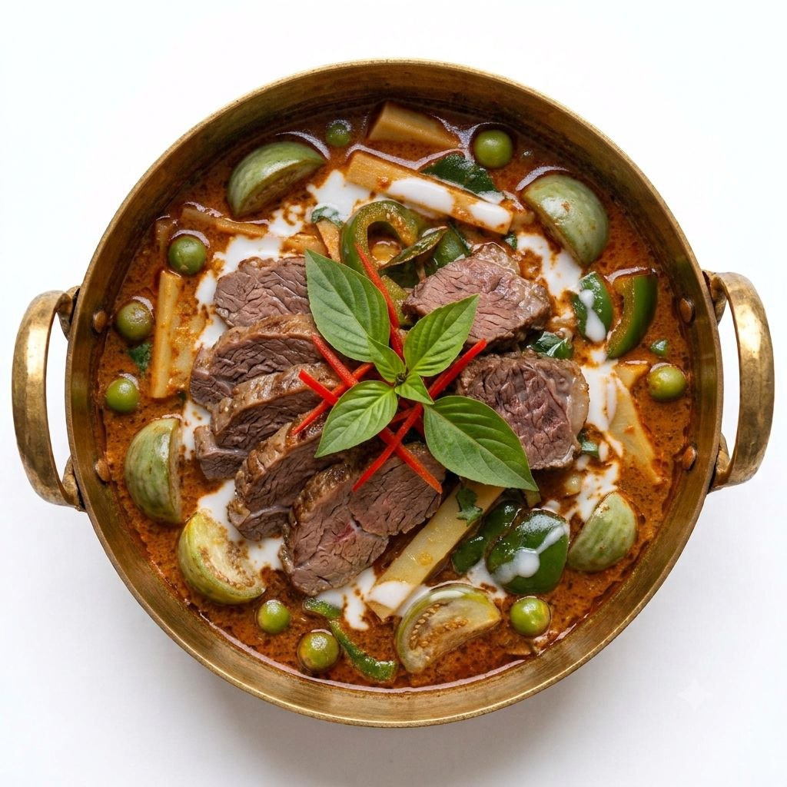
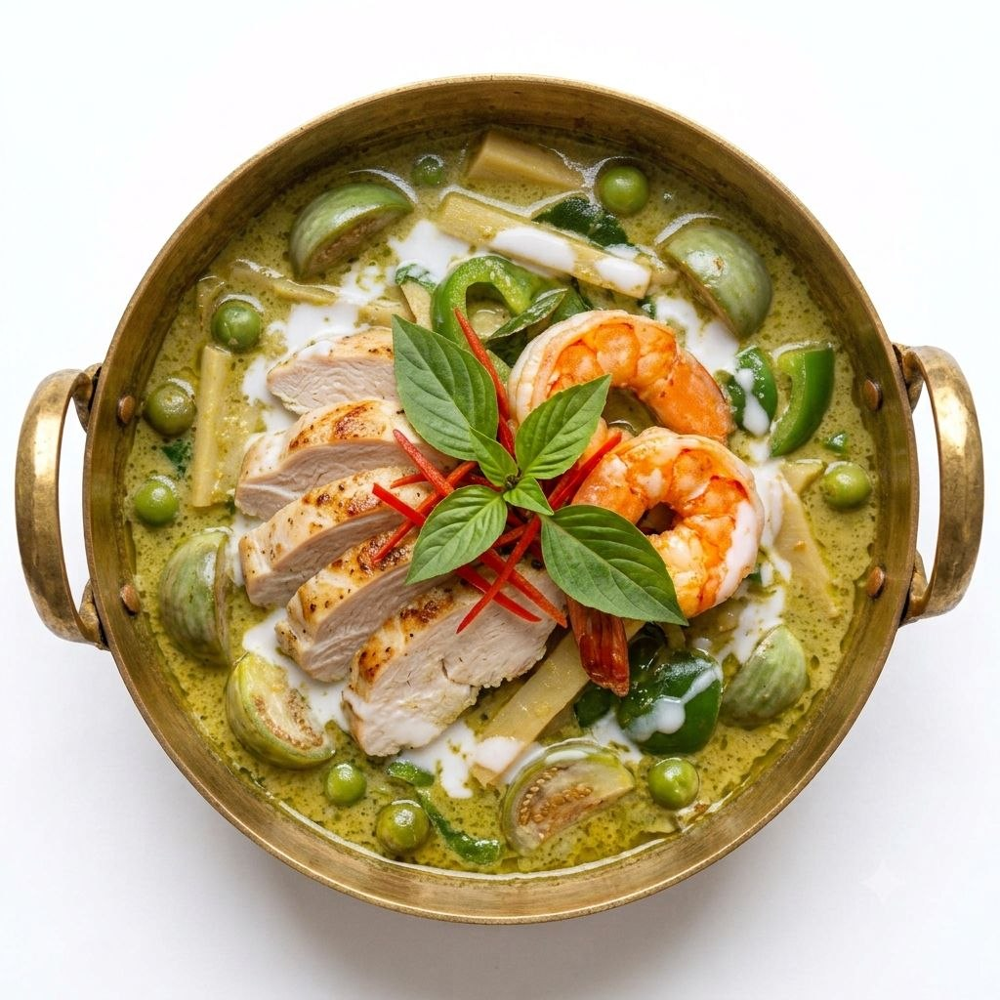
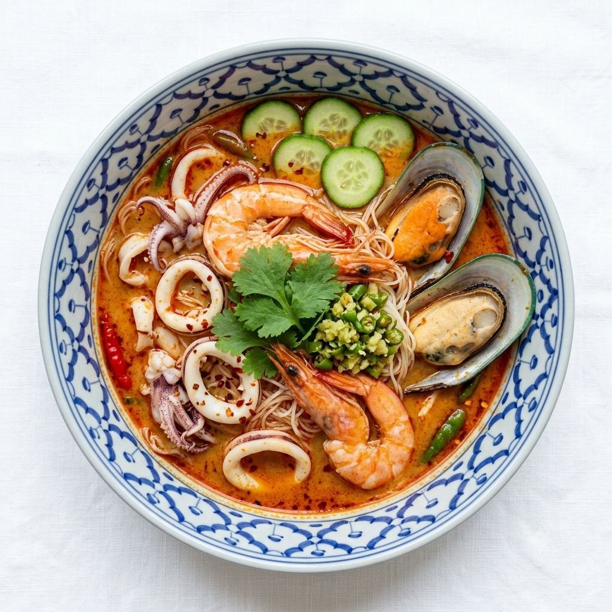
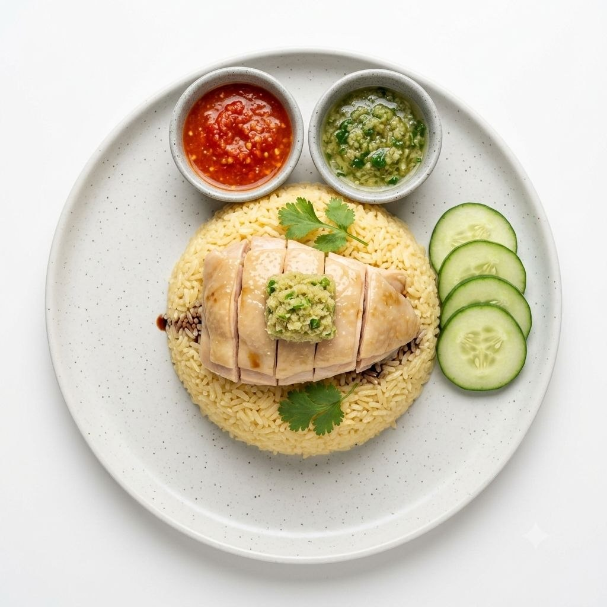
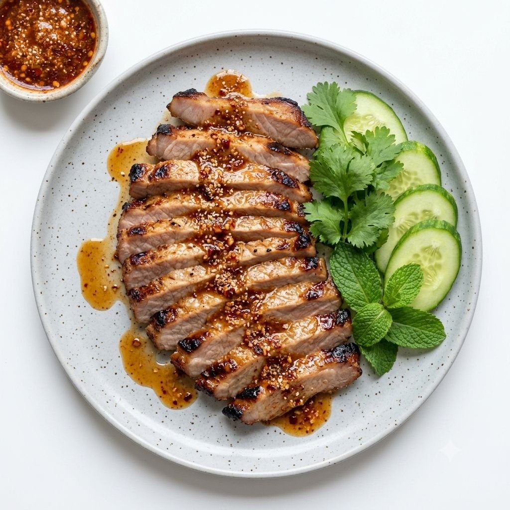
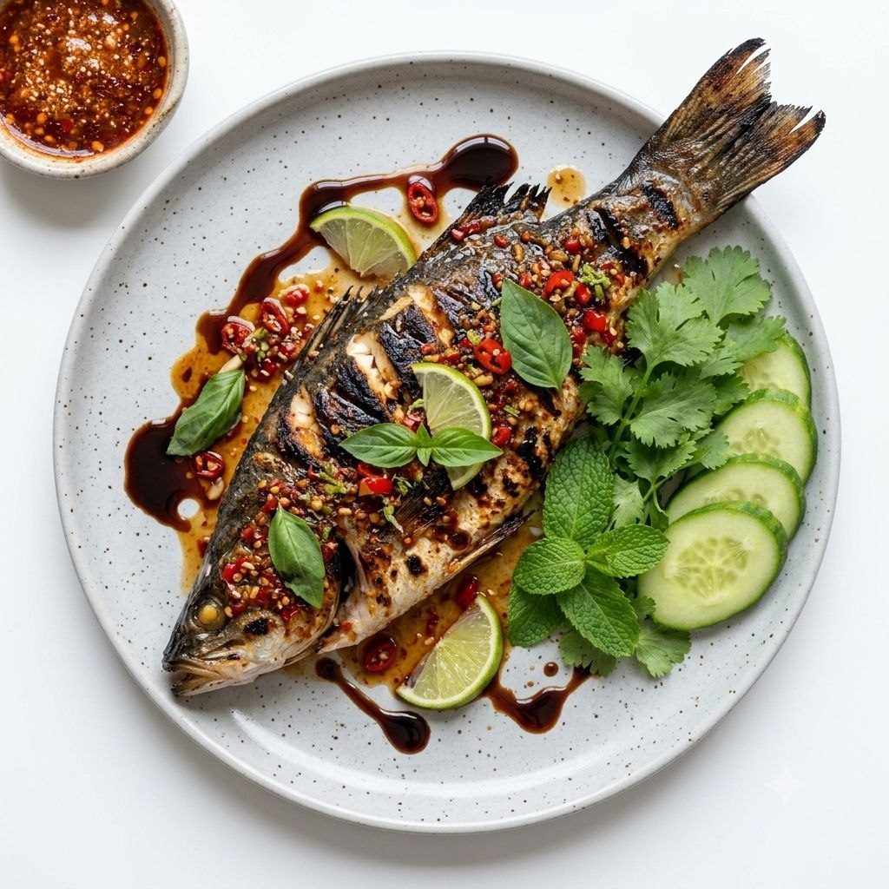
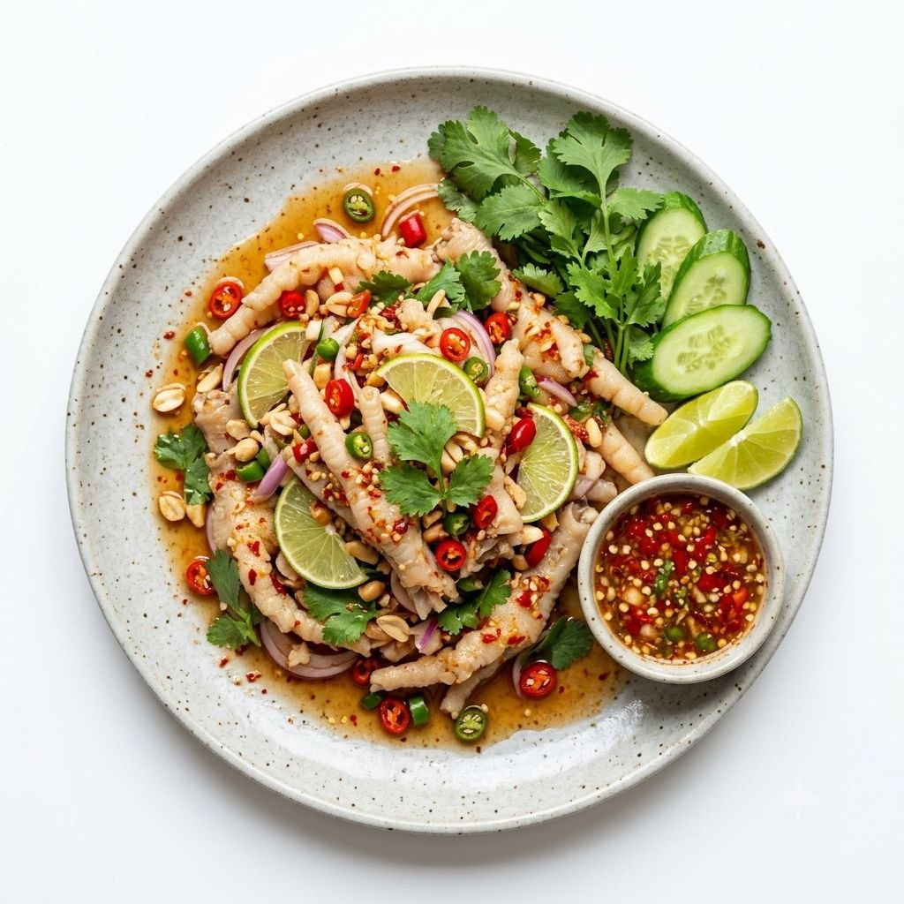
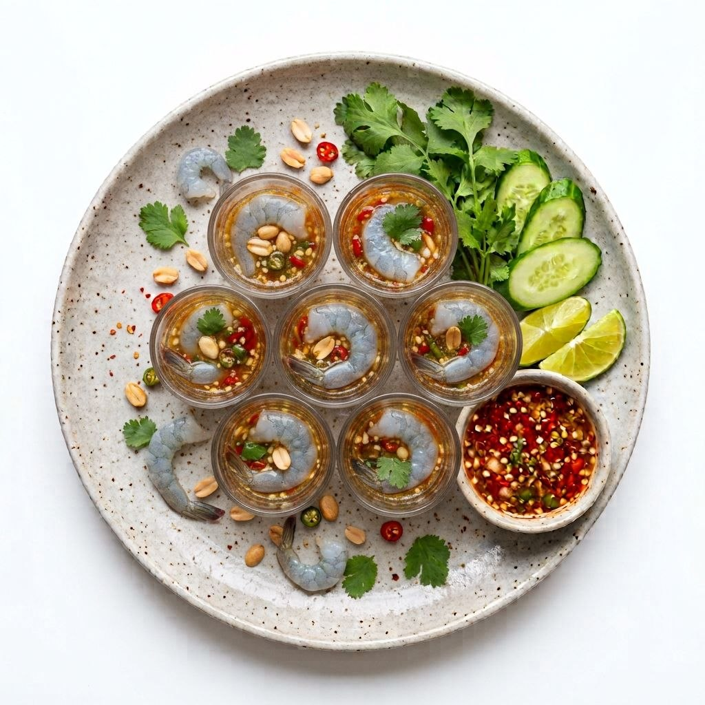
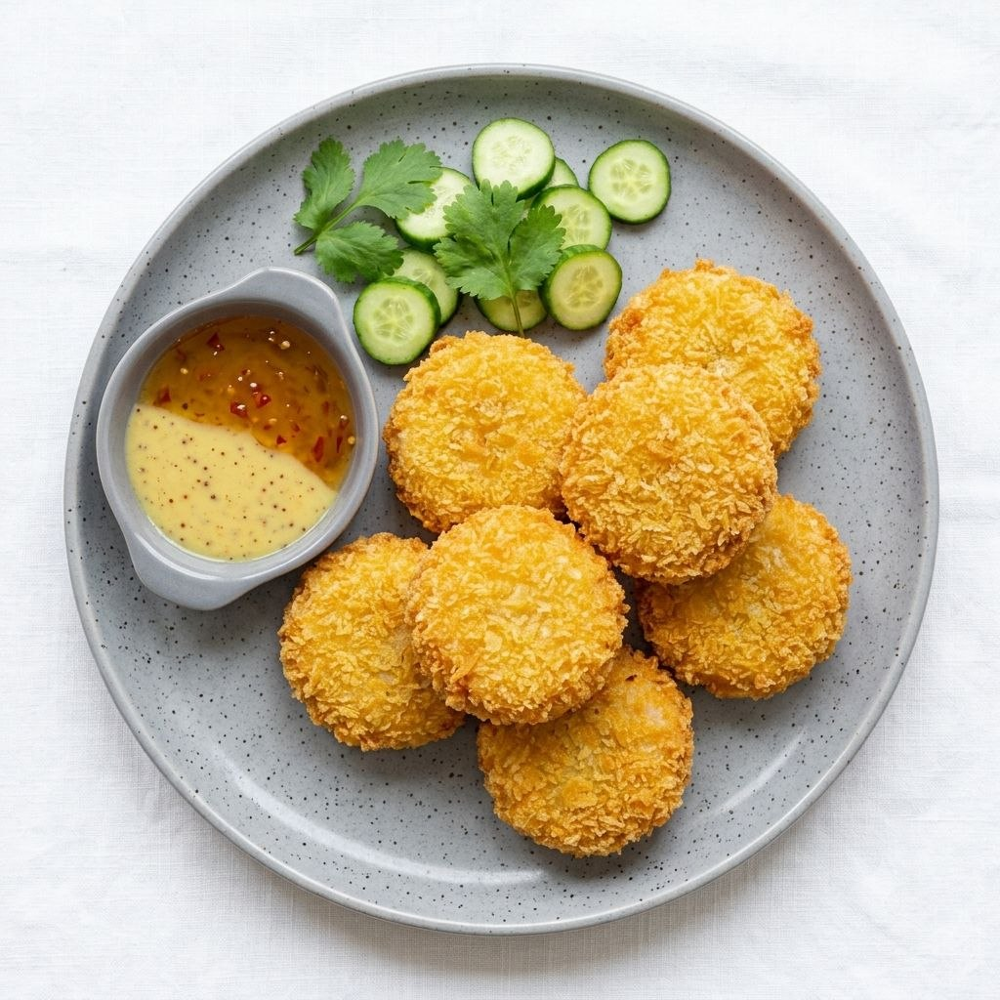

爽滑彈牙的粉絲吸滿鮮甜蝦汁，配上新鮮大蝦、蒜蓉、薑片及洋蔥一同煲煮，香氣濃郁誘人。大蝦肉質鮮嫩爽口，粉絲則充分吸收蝦的鮮味與醬汁精華，每一口都充滿海鮮香氣。熱辣辣上桌時香味撲鼻，粉絲越食越滋味，大蝦更是鮮甜多汁。無論單食還是配飯，都令人忍不住一口接一口。

香濃惹味的泰式紅咖喱，配上嫩滑牛肉慢慢燴煮，讓每一片牛肉都吸滿濃郁咖喱汁。紅咖喱融合椰奶與泰式香料，帶有迷人的香辣及微甜滋味，入口醇厚而不失層次。牛肉軟嫩入味，配上熱騰騰白飯尤其滋味。咖喱汁滲入飯粒後，每一口都香濃滿足，喜歡泰式濃郁口味的朋友一定會食得過癮。

經典泰式青咖喱配上嫩滑雞肉，以香濃椰奶及新鮮香料慢慢煮出豐富香氣。青咖喱入口順滑，香茅、南薑及檸檬葉的清新香氣隨即散開，再帶出恰到好處的辛辣感。雞肉嫩滑入味，吸滿咖喱汁後更加香濃。配一碗熱飯，讓椰香濃郁的咖喱汁包裹每粒米飯，酸香、辛香與微甜交織，令人越食越開胃。

酸辣醒胃的冬陰功湯底，加入鮮嫩海鮮與爽滑湯粉，呈現經典泰式酸辣風味。香茅、南薑、檸檬葉及青檸香氣層層交織，入口先酸後辣，再帶出鮮甜海鮮味。湯粉吸收濃郁湯汁後爽滑入味，每一啖都充滿刺激又開胃的滋味。熱辣辣一碗入口，酸香撲鼻、湯頭濃郁，非常適合喜歡酸辣口味的朋友。

嫩滑多汁的雞肉去骨處理，食起來更加方便，每一口都能享受細嫩雞肉的鮮香。搭配香氣十足的泰式雞油飯，米飯吸收雞香與薑香，粒粒油潤而不膩。再配上特色泰式醬汁，酸香微辣的味道為雞肉增添層次，令整體風味更加豐富。雞肉、香飯與醬汁一同入口，簡單卻非常滿足，是一款令人食完都想再食的經典主食。

精選豬頸肉醃製入味後烤至表面微焦，帶出迷人的炭燒香氣。豬頸肉油脂分布均勻，外層微微焦香，內裡依然嫩滑多汁，越咬越能感受到豐富肉香。配上泰式酸辣沾醬，酸、辣、甜與烤肉香氣互相融合，瞬間提升食慾。每一片入口都爽嫩帶香，非常適合配飯享用，亦非常適合與朋友一齊分享。

新鮮鱸魚以泰式風味醃製後烤至外層香脆，魚肉保持細嫩鮮甜，散發誘人的烤魚香氣。魚皮微微焦香，魚肉則嫩滑多汁，輕輕一夾便能分離。搭配泰式酸辣醬汁，青檸的酸香配合辣椒與香草味道，將魚肉的鮮甜完全帶出。酸辣開胃又不會搶走魚本身的鮮味，每一口都清爽又惹味，非常適合喜歡海鮮的朋友。

雞腳去骨後更加方便入口，保留爽脆彈牙的口感，再配上酸辣開胃的泰式調味。雞腳充分吸收青檸、辣椒、蒜香及特色醬汁，入口先是清新的酸香，隨後帶出微辣刺激，越食越開胃。爽脆口感配上濃郁醬汁，層次十足，一口接一口完全停不下來。無骨設計亦令食用更加方便，是非常適合配飯或分享的小菜。

新鮮生蝦配上泰式酸辣醬汁醃製，蝦肉保持爽嫩彈牙，入口帶有鮮甜海鮮味。青檸汁的清新酸香、辣椒的刺激及蒜蓉的濃郁香氣互相融合，將生蝦的鮮味襯托得更加突出。入口冰涼爽脆，酸辣滋味瞬間刺激味蕾，十分醒胃。喜歡泰式重口味及海鮮鮮味的朋友一定會喜歡，越食越開胃，十分過癮。

外層炸至金黃香脆，內裡則是鮮嫩彈牙的蝦肉，咬下去先聽到酥脆聲，隨即感受到濃郁蝦香。蝦餅炸得香而不乾，口感紮實又帶有彈性，每一口都充滿鮮甜海鮮味。配上泰式甜辣醬，甜香與微辣滋味剛好平衡炸蝦餅的豐腴感，令人越食越想食。無論作為主食、小食或分享菜式，都非常適合。